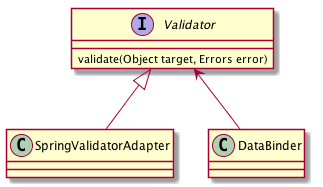

自定义Spring MVC的验证框架
背景
- 在已有项目中使用了spring mvc中的Validation框架做验证。在使用的过程中发现改框架有如下缺点：
- 验证规则在编译期确定。 不能在运行期重新设定验证规则
- 自定义一个验证规则比较麻烦。需要自己定义一个注解。
- 验证规则分散在各个类的注解中。
对于第一个缺点在在我们的新项目中变的不可接受了。我们的系统是一个多租户的Saas系统。 针对多家租户我们采用了一套代码完成所有逻辑。 同一个对象在不同的租户中他的验证规则不一定相同。而一个对象属于哪个租户只有在运行期才能知道。所以为了能够根据对象属于哪个租户而动态的选择验证规则，我们对Spring的验证框架做了一点扩展。
最后有了一个新的验证框架。
新的验证框架的使用
定义规则
使用我们这个新的验证框架你需要做在classpath的可见范围创建一个名为validator.qr（改文件目前是写死的，后续可以考虑通过一个开关来指定）的文件。这个文件保存的就是我们所有的验证规则。 他本质上是一段groovy脚本。只不过加上了一点关于验证的语法。我们可以称它针对验证的DSL。 下面就是他常见的样子:
1 2 3 4 5 6 7 8 9 10 11 12 13 14 15 16 17 18 19 20 21 22 23 24 25 26 27 28 | import groovy.time.TimeCategory
import ....
def somePattern = /(\d{6})?/
def searchTypes = ["OnewayFlight","onewaybus","RoundtripFlight","roundtripbus","RoundTripFlight"]
...
def someClosure = { val, obj ->
}
...
rules(site:'*'){
BookForm(package:'com.gunn.bean'){
searchType blank:false, inList:searchTypes, nullable: false
INVOCE {
//组
invoiceRecipientMobile nullable:false, matches:/(1\d{10})?/, blank:false
}
}
}
rules(site:'hubei'){
BookForm(package:'com.gunn.bus.busship.bean'){
searchType blank:true, inList:searchTypes, nullable: false
}
}
|
下面是对这段DSL的详细说明：
- 1~2 行是导入类，就和java中导入要使用的类一样
- 4~5 行定义了一些公用的变量。 可以没有。
- 8~10 行定义一些公用的方法或闭包。可以在验证规则中使用。可以没有。
- 12~21 行定义了组公用规则。不属于任何旗舰店。但是他时基础的规则。在验证过程中，优先寻找特定旗舰店定义的规则段。如果找不到。就到这个通用规则段来找。
- 12 行 定义规则。site熟悉用于标示这个规则应用于那家租户。* 表示这个规则组是一个通用规则组。整个验证规则中只能有一个。
- 13 行 定义了一个正对于一个类的验证规则。该规则应用于com.gunn.bean.BookForm
- 14 行 是对BookForm中的searchType一个字段的规则进行约定。 blank:flase 表示该字段不能是一个空的字符串。 inList: searchTypes 表示该字段的值必须在searchTypes 这个列表中。 nullable: false 表示这个字段不能为空。
- 16 行表示定义一个验证组(Group). 默认情况下对这个对象验证的时候Group 内的规则是不去校验的。只有当显式调用的时候才会去验证。
- 23 ~ 27行 是为hubei定义了一组 验证规则。其他内容和公用组的机制一样。
创建校验器
在spring 配置文件中加上如下内容：
<!-- validator bean --> <bean class="com.gunn.bus.validate.ValidatorConfigManager" id="validatorConfigManager" init-method="init" > <aop:scoped-proxy proxy-target-class="true" /> </bean>
在Controller中使用
这个时候校验器就已经创建好了。下面就是使用他了。使用也很简单。 在Controller类中添加如下代码：
@Autowired
private ValidatorConfigManager validator ConfigManager;
@InitBinder
public void initBinder(HttpServletRequest request, ServletRequestDataBin der binder) {
binder.setValidator(validatorConfigManager);
}
验证框架的实现
背景知识
这个框架是对Spring的验证机制的一个扩展。 这个框架主要的几个类入下图。

主要就是这么几个类。一个请求进入spring框架到验证的调用过程如下图:
上图需要额外说明。
配置期
这个时期的主要任务如下：
- 新建我们扩展的Validator。 也就是com.qunar.flight.flagship.validate.ValidatorConfigManager
- 从配置文件读取，解析验证规则
- 根据验证规则创建验证对象
- 将验证规则存放到ValidatorConfigManager
出发之前
在开始之前我需要先对Groovy的一些特性做点了解:
- 闭包
- 闭包就是一个可执行的代码片段。
- metaClass 元类
- 允许你动态的为一个类添加一些方法。
- builder
- 先来看个例子. http://groovy.codehaus.org/Swing+Builder
实现配置部分
我们先从高处看一下我们的结构：
![interface Validator{
validate(Object target, Errors error)
}
class ValidatorConfigManager{
validateRuleContainer:Map
__
init()
configValidateRules()
runDSL()
__
validate()
getValidateRule()
}
class ValidateGroup{
pojoClassName : String
name : String
constrainedProperties : Map<String, ConstrainedProperty3R>
}
class ConstrainedProperty3r{
}
Validator <|-- ValidatorConfigManager
ValidatorConfigManager --> ValidateGroup
ValidateGroup --> ConstrainedProperty3r
ValidatorConfigManager --> SpringValidatorConfigureationDelegate
SpringValidatorConfigureationDelegate --> ValidatorConfigurationBuilder](_images/plantuml-34c0019ce96703a7cfafb0115a005c3f637428e5.png)
Grails从2.2升级到2.3.3遇到的问题
Debug
升级到2.3 以后我就找不到grails-debug 这个命令了。后进过查询发现原来是被 grails -debug 这个参数替代了。是要了这个参数以后又遇到一个问题。就是需要通过Remote Debug 的方式连接进去才可以。但是不管咋地都不在断点处停下来。真的让人抓狂。
最后通过这个一个老外的一段话给解决了
In Intellij go to “Run / Edit Configurations”, click + then “Remote” and name it whatever you want (example “Grails Remote”) then press ok. Then from the command line do: grail run-app –debug-fork Attach your debugger by running your “Grails Remote” config. Done.
原来是需要使用 grails run-app –debug-fork 命令来做。解了，亲测！